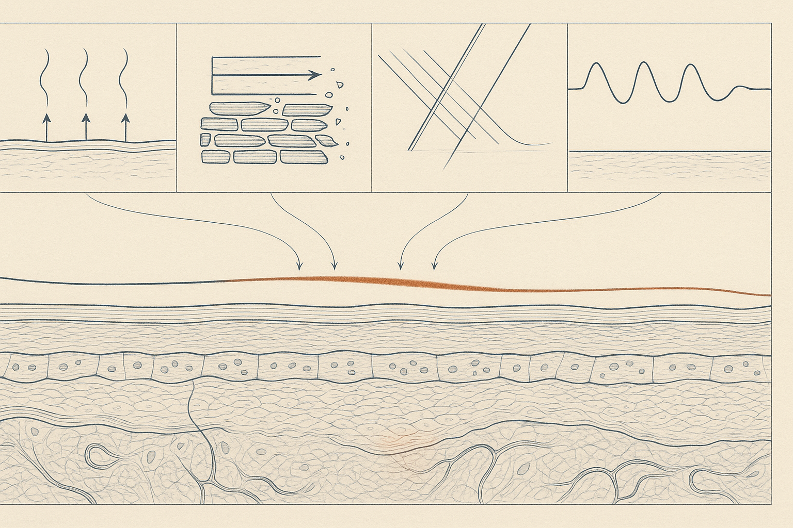
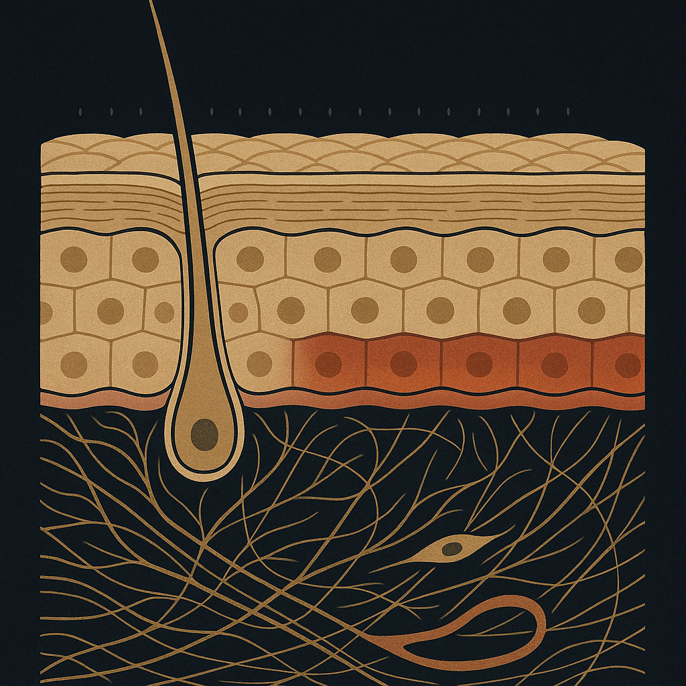
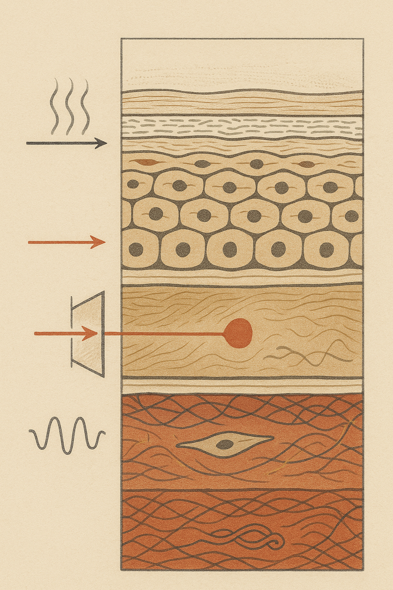

Review below. Reply approve to publish the Facebook post, or tell me edits.

Four everyday things are inflaming your skin. Three cost nothing to fix, and none of them are in your skincare cabinet. Which of the four is costing you the most?
Most advice about sensitive, reactive skin ends the same way: buy something gentler. A milder cleanser, a barrier cream, a serum with fewer actives. Sometimes that helps. But the load is often coming from somewhere a product cannot reach. The term for it is inflammaging, and none of these four fixes requires a new skincare product. The only one with a cost is the sunscreen you probably already own.
What we want to name here is something that rarely makes it onto a label: the slow, cumulative, low-grade irritation your skin absorbs every single day, and what it quietly adds up to over years. It is also the honest frame for where red light therapy at home does and does not belong, which we get to at the end.
Researchers use the word inflammaging to describe chronic, low-grade inflammation that never fully switches off, and its contribution to how tissue ages. Stripped of the jargon, it means this: your skin's repair system keeps getting called out for small jobs, over and over, and never quite gets to clock off.
Acute inflammation is a good thing. It is repair working. You nick yourself shaving, the area goes pink, immune cells arrive, the damage gets patched, the response shuts down. Clean job, closed ticket.
Chronic low-grade inflammation is different. The response is small, so small you never see redness, but it keeps firing. Repair runs slightly behind damage, day after day. Each individual episode is invisible. The receipt arrives years later, and it tends to look like texture, persistent redness, and uneven tone.
A useful way to think about it is a recovery budget rather than a war on ageing. Your skin can absorb a certain daily load and repair it overnight. Go over budget consistently and the shortfall compounds. Quietly. For years.
Hot showers, a parked car in January, leaning over a stove, the sauna you love. Heat drives vasodilation, and repeated heat exposure can aggravate flushing and even pigment, entirely independently of UV. Your skin does not need to burn to register it.
The fix: make the last 60 seconds of your shower cooler than the rest, and turn your face away when you open the oven door. That is it. It costs nothing.
Towel drying, pillow drag, the arms of your glasses, a phone screen pressed to your cheek, the hand you rest your chin on at your desk. Mechanical irritation is genuinely cumulative, and it lands on the same few square centimetres night after night. This is one reason texture and redness are so often asymmetrical.
The fix: press dry, never rub. And notice which side you sleep on. Most people can guess it from the mirror before they check the pillow.
This one surprises people. Car side windows and most office glazing block UVB, the burning wavelengths, but pass a substantial amount of UVA, the wavelengths most associated with photoageing. If you commute in Australia, you are collecting a real dose while sitting perfectly still, on days you would never call sun exposure.
The fix: SPF on days you never plan to be outside, and treat the drive itself as sun time.
Short sleep is associated with raised inflammatory markers and slower barrier recovery. This is why skin tends to look worse the week after a bad run of nights, not the morning after one. The response lags the cause, which is exactly why people blame the wrong product.
The fix: judge your skin on a rested week, not a broken one. If you are deciding whether a routine is working during a stretch of five-hour nights, you are not testing the routine.
None of these four sources gets worse with age. What changes is the other side of the ledger. Recovery slows. Cell turnover lengthens, barrier repair takes longer, and the same daily load leaves a slightly bigger residue than it did a decade earlier.
This is not a reason for alarm and it is certainly not a moral failing. It is arithmetic. The practical response is not to fight harder but to protect the recovery budget: subtract a little load, and give repair a fair chance to finish the job each night. Skin longevity is mostly this. Unglamorous, cheap, and cumulative in your favour.
Honesty section. Inflammaging is well described in the research literature, but the day-to-day contribution of any single habit is not precisely quantified. Nobody can tell you what percentage of your redness came from hot showers versus your commute versus a bad month of sleep. Anyone who claims that level of precision is selling something.
And nothing here is a diagnosis. Persistent redness, flushing, itch or stinging belongs with a GP or dermatologist, not with a device, and not with a blog. Rosacea and other conditions have real treatments, and the first step is a proper assessment.
Briefly, and carefully. Red light at 630 nm is studied as a gentle, low-irritation input: it is not an acid, not an abrasive, not a resurfacing treatment. That is why red light therapy at home can suit skin that is already carrying a daily load. But let us be clear about what it is not. It is not an anti-inflammatory. It does not replace SPF. It does not restore dermal thickness. And no light routine subtracts a single item from the four above.
Before you consider any light-based routine, read which wavelengths do what, which to avoid, and who should not use light at all. Knowing when not to use something matters as much as knowing how.
The skincare industry is built on addition: one more step, one more active, one more purchase. But if your skin is red, reactive, or ageing faster than you would expect, the highest-leverage change you make this month is probably a subtraction. Cooler water. A softer towel. Sunscreen on the commute. A rested week before you judge anything.
Your skin is not asking for more. It is asking for less to recover from.
If you ever want a closer look at what we make, it is here.

Three of the four things irritating your skin every day are free to fix. None of them are in your skincare cabinet.
When skin gets reactive, the usual advice is to buy something gentler. Often the real load is coming from somewhere else. Researchers call it inflammaging: repair work that never quite finishes, so the small stuff accumulates.
The four:
1. HEAT. Hot showers, the hot car home, standing over a stove. Fix: run the last minute of the shower cooler.
2. FRICTION. Towel rubbing, pillow drag, glasses, hands on your face at your desk. Fix: press dry instead of rubbing, and notice which cheek meets the pillow.
3. UVA THROUGH GLASS. Car windows and office glazing block most UVB and pass plenty of UVA. An Australian commute counts as sun. Fix: SPF on the days you are never outside.
4. SLEEP DEBT. Short sleep slows barrier recovery, which is why a bad week shows up on your face the week after. Fix: do not judge your skin on a broken week.
We sell a light therapy mask, and nothing on this list is solved by one. Three of these are free, so take the free wins first. If redness or flushing is persistent, that is a GP conversation, not a device conversation.
The best skincare move this month might be a subtraction, not a purchase. Mine is the shower temperature and I am not proud of it. Tag the friend who needs the SPF-in-the-car one.
Which of the four is yours?
#skinscience #inflammaging #skinbarrier
FIRST COMMENT: Full write-up, and if you ever want a closer look at what we make, it is here: https://redermis.com.au/products/red-light-therapy-face-neck-mask
IMAGE PROMPT: Editorial science illustration in the style of Scientific American or New Scientist. One single iconic macro cross-section of human skin filling the frame on a deep indigo-charcoal ground, drawn as a flat print illustration with fine hairline linework and NO 3D block, NO basket weave, NO smoke. Histologically correct top to bottom: a thin stratum corneum of flattened overlapping corneocytes bound by ordered lipid lamellae, then living epidermal strata of nucleated cells each with exactly one nucleus, a clear basement membrane, then a dermis of fine banded collagen bundles in a felt-like interwoven mat with slender gold elastin filaments, two spindle fibroblasts sitting attached within the matrix, and one accurate looping dermal capillary. Across the top surface, a rank of small identical faint stimulus marks strikes repeatedly and evenly, each mark alone almost invisible; beneath them the dermal band saturates progressively deeper ember-red from left to right until it reads as one continuous low warm glow, showing quiet accumulation rather than one dramatic event. Restrained palette of clay, ochre, warm charcoal and a single ember-red accent. Flat matte print aesthetic, generous dark negative space. No glow-blur, no sunburst, no smoke, no woven rope or wicker, no labels, no text, no numerals, no people, no faces, no product, no device.

Four things are inflaming your skin every day. Three cost nothing to fix.
Inflammaging is the boring name for it. Repair work that never quite finishes, so the small daily stuff adds up.
Four culprits, none of them in your cabinet:
HEAT. Hot showers, hot cars, the stove. Run the last minute cooler.
FRICTION. Towel rubbing, pillow drag, hands on your face all day. Press dry, do not rub.
UVA THROUGH GLASS. Car and office windows pass it. SPF on the days you are never outside.
SLEEP DEBT. Barrier repair slows. The bad week shows up the week after.
Honesty beat: we sell a light mask and we are still earning our reviews, so take the three free fixes first. None of this is fixed by a device. Persistent redness is a GP conversation.
Best skincare move this month might be a subtraction. Mine is the shower temperature and I am not proud of it.
Which one is yours?
Save this for the next bad sleep week, and send it to the friend who showers too hot. Full write-up on the blog. Link in bio if you ever want a closer look.
#skinlongevity #inflammaging #skinbarrier #skincareaustralia #sensitiveskin #australianskincare #skinscience #skinbarrierrepair #inflammation #skintexture #photobiomodulation
IMAGE PROMPT: Vertical editorial science illustration in the restrained style of Scientific American or New Scientist, on a warm bone-cream paper ground with a restrained palette of clay, ochre, terracotta and warm charcoal plus one ember-red accent (NO cold blue or slate grey). A single tall continuous histologically accurate skin cross-section runs the full height of the frame, read top to bottom as four stacked depth registers separated only by fine hairline rules: correct stratum corneum of flattened corneocytes with lipid lamellae, nucleated living epidermal strata with one nucleus per cell, a clear basement membrane, and a deep dermis of fine banded collagen bundles with gold elastin filaments, a spindle fibroblast and one looping capillary. Entering from the left margin at each register, one small distinct everyday stress input is drawn as a precise diagram element striking the surface: rising convection heat lines, a directional shear arrow smearing the corneocyte hatching, an oblique beam passing through a glazed pane drawn in section, and a repair oscillation that flattens and loses amplitude. With each register descending, the dermal collagen band tints incrementally warmer ember-red and the fibre lattice loosens slightly, so the accumulated residue deepens toward the bottom of the frame. Flat matte print aesthetic, crisp hairline linework, generous margins, bold enough shapes to read at 150 pixels. No grid of four separate boxes, no text, no labels, no numerals, no logos, no people, no faces, no products, no devices, no glow-blur, no sunbursts.
**Title:** 4 everyday things quietly ageing your skin (none are in your skincare cabinet)
**Description:** Redness, texture and uneven tone compound from low-grade daily inflammation. Researchers call it inflammaging. Four sources, four fixes: heat (run the last minute of the shower cooler), friction (press dry, do not rub), UVA through glass (SPF on indoor days), sleep debt (judge skin on a rested week). Three of the four cost nothing, and a light mask fixes none of them, including ours. Persistent redness is a GP conversation. Full write-up on the Redermis journal. Save this to your skincare board.
**Link:** https://redermis.com.au/blogs/journal
**Hashtags:** #Inflammaging #SkinScience #SkincareTips #SensitiveSkin #SkinBarrier
Note: this pin reuses the Instagram image (no separate image is generated for Pinterest).